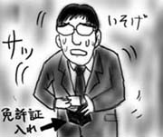
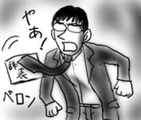
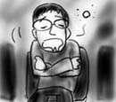
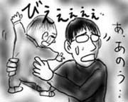
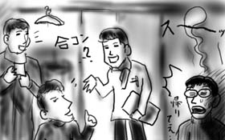
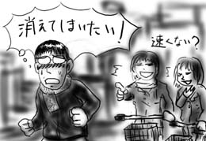

というわけで，今日はスーツを着用して社外の人とのミーティングでした．何枚か家に置いていた名刺をかき集め，剥き出しのまま(raw)胸ポケットに捩じ込みます．
渋谷の先のミーティング会場まで午後一で直行すればいいという話だったので，ゆっくりと家を出たのはいいのですが，寄り道して渋谷のタワーレコードでCDを物色していたら電車を一本逃してしまい，あやうく遅刻するところでした(最悪)．
会場へは例の「速くない？」歩きで到達し，なんとか間に合いました．女子高生がいなくて助かりました．
会場では名刺交換がはじまりそうな雰囲気．やばいよ名刺入れなんて持ってないよ．剥き出し(raw)のままポッケから取り出したらやっぱり失礼だよ．相当あせりながら，脳はこの危機を脱出するためにフル回転！
「あれだ！」
ひらめいた僕はトイレに行くふりをして会場を出て，財布のなかから免許証ケース(書き換え時にもらったもの)を取り出し，二つ折りの免許証入れに胸ポケットの名刺を挟み込み，再度胸ポケットにセット(pseudo)！

会場に戻った僕は「運転免許証」と書かれた側を見せないように注意しながら名刺交換をこなしました．
スーツ着用仕事はスリルがありすぎて困ります(むしろ僕に社会人スキルがありません)．
今日は部署の忘年会でした．
翌日はミーティング先へ直行するので，書類を持って出なければいけなかったのですが，バッグを忘れてしまったために書類を持って帰ることが出来ません．うっかりしてた．
周りの人に相談したところ「会社のロゴの入った紙袋があるよ」と言ってくれたのですが，「会社がバレちゃうのでイヤですよ」と拒否．愛社精神のカケラもありません．結局，誰かが靴を入れていたビニル袋をもらって書類を入れました．これはこれでとても失礼な気がしますが，社名をぶら下げながら飲み屋街をうろつくのは本当に避けたいことだと思います．
常々「スーツを毎日着ないといけなくなったら転職しますよ！」と豪語していた僕ですが，明日社外の人とのミーティングでスーツを着なければならなくなり，「明日辞表たたきつけてきてね！」と優しい言葉をかけまくられました．「"毎日"着ないといけなくなったら」というところが抜けて「スーツ着用→辞職」ということになっていました．下手なことは言うもんじゃないなぁ．
僕も僕で「ネクタイの先に辞表を縫い付けて挑みますよ！」とか適当なことをしゃべっていました．

忘年会は口先が試されます(あきらかにクリアできていません)．
プロジェクトXで感動している世のお父さん達に「ばちかぶり」を聞かせて回る会！(挨拶)
今年の紅白では，中島みゆきが黒部ダムから中継で歌うらしいですね．対する平井堅は，アメリカからの中継で，冷たい土の中から主を掘り返しながら熱唱！とかにならないかなぁ．
昨日，帰りに購入した広江礼威『ブラック・ラグーン 1巻』(サンデーGXコミックス)を読む．魚雷が宙を舞う！八双飛びで敵船団を沈めて回る！眼鏡メイドが走る車に追いすがり，ナイフを突き立てよじ登る！バカだ！たまらない！
誘われて，中世ルネサンス期の合唱を聞きに行きました．初めての体験でしたが，飛び交うレーザーや，崩壊していくスペースコロニーや，爆発炎上する敵機などを妄想し，アカペラ混声合唱は戦闘シーンによく合うよなぁと思っているうちにいつしか夢の世界へ旅立っていました(最悪)．

しかし，途中，変なコード進行，ポリリズム，転調というすさまじい曲が声だけで演奏されていて，一気に目が覚めました．すげぇ．思わず聞き入ってしまいました．大昔にも変態がいたんだなぁ！(失礼)
というわけで，普段は引きこもりがちだけど，たまにはこういうのに出かけるのも悪くはないなと思いました．もっとも残りの時間は秋葉でジャンク屋を巡っていたんですけど．何事もバランスが大切だと思います．
昨日とはうってかわって，今日は気の置けない暗黒同期達で忘年会でした．
しばらく前にご子息誕生となった同期宅に昼間から集まって，奥さんの作ってくれたおでんを突つきながら赤子も突つくという趣旨のイベントです．
「歩(あゆみ)」という名前なのをいいことに，勝手に赤子を「大阪(こっちは「あゆむ」ですが)」呼ばわり．指をしゃぶる大阪！よだれをたらす大阪！声にならない声をあげる大阪！
小さな手をにぎったり頭をなでたり，好意を持って接していたのですが，僕の顔を見てびくっと体を引いたかと思うと突然泣き出してしまいました．暗黒同期には「ミズグチ君の未来が見えたんだよ．そりゃ泣くよ．」という主旨のことを言われました．どうしよう！

やはり大勢が集まっていると落ち着かないのか，それ以降も頻繁に泣いていましたので，「母親の心がわかっておそろしいのか」と勝手にドグラマグラごっこをしたりしましたが，これは失礼だったと思います．ごめんなさい．
しかし，父親や母親が抱き上げるとぴたりと泣き止むので，やはり親子というのは不思議なものだなぁとしきりに感心しましたよ．
今日は同期忘年会でした．
会場の近くに住む同期が車で帰宅するので，これ幸いと何人かで同乗して行ったのですが，車内の話題は主に最近のヒット曲．「BoAいいよね！」と意気投合する同期たちですが，僕にとってボアとはボアダムスのことなのでさっぱり話に参加できません．
沈黙していることに耐えきれなくなった僕が捻り出した台詞は「BoAって韓国人，なんだよ，ね？」という毒にも薬にもならないものでした．何かすごく今さらっぽいし．死にたい！
会場は他の同期達の馴染みの店らしく，何だか店員がやたら馴れ馴れしいんです．初めて来たのは僕だけらしく，同期達も店長や店員と気さくに会話を交わしています．「この前○○と△△で韓国に行ってきたんですよ」「合コンですか？」とかそんな感じ．それ意味わからないし．合コン旅行というのが世の中では頻繁に執り行われているのですか？
「違いますよ〜」「あ，婚前旅行ですか？」とかそんな感じ．それ普通男数人が連れ立って行かないし．多分．難しいなぁ．

こんな状態では，飲まないとろくに話もできないので酒を浴び，朦朧とする頭で中身のない話をしてきましたよ．そしてそのまま朦朧と帰宅したのですが，翌日冷凍庫をのぞくと買った覚えのない雪見だいふくが入っていました．帰りにコンビニで茶を買ったのは覚えているのですが…．
朝ご飯になりました．雪見だいふくが．
ここ二日ばかり，「雪が残っていて危ないから」という理由で立ち入り禁止になっている領域に踏み込み，シャーベット状態になった雪にロックオンのサインを刻んで帰っています．雪がほとんど手つかずで残っていて，しゃくしゃくと自由に歩き回れて楽しいです．いやぁ，ちょっとしたところにもフロンティアはあるもんなんだなぁ(行き止まりでした)．
今まではスリムボディを自認していた僕ですが，先日出来心で体脂肪を計ったところ，20%を超えていたために体脂肪計の「軽度肥満」ランプが点灯してしまいました．相当ショックでした．これはマズー．
「成人病の温床」「隠れ肥満」「隠れオタク」などの警句が脳内に鳴り響いたため，通勤は徒歩に切り替え，しかも出来るだけ早足で歩いてカロリー消費につとめることにしたのでした．
ところが先日，帰宅途中にその様子を自転車に乗った女子高生の集団に見られてしまいました．さすが箸が転がっても橋が落ちてもおもしろおかしい年代，「なんか速くない？」と指差された挙げ句，「女子高生たち停止→僕が追い抜く→女子高生たち発進→追い越して振り向き様に確認→ゲラゲラ大笑い」の無限コンボを決められる羽目に．
これって何かの拷問なのかなぁ！

というわけで今日は高校生のいない時間帯まで仕事をしてしまいました．仕事だいすき！